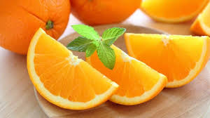

tentangbuah.com
Jeruk

Jeruk atau limau adalah semua tumbuhan berbunga anggota marga citrus dari suku Rutaceae (suku jeruk-jerukan).
Anggotanya berbentuk pohon dengan buah yang berdaging dengan rasa masam yang segar,
meskipun banyak di antara anggotanya yang memiliki rasa manis.
Khasiat
- Melancarkan Pencernaan
- Mengatur Tekanan Darah Tinggi
- Mencegah Kanker
- Meningkatkan Kekebalan Tubuh
- Mencegah Penyakit Ginjal
- Memperkuat Tulang
Daftar Harga
| Jenis jeruk | Harga | |
|---|---|---|
| Per kilo | Per biji | |
| Jeruk nipis | 65.000 | 8.000 |
| Jeruk Sitrun | 67.000 | 7.000 |
| Jeruk Purut | 25.000 | 3.000 |
| Jeruk Bali | 32.000 | 3.500 |